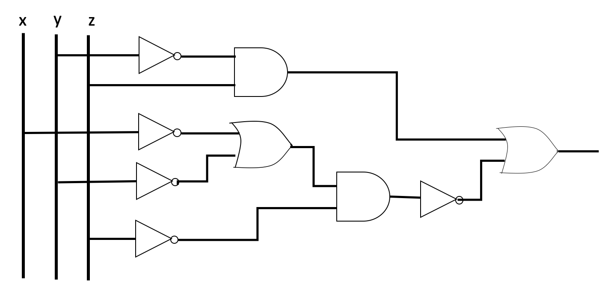
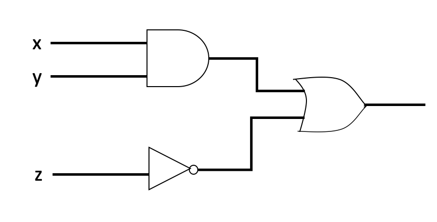
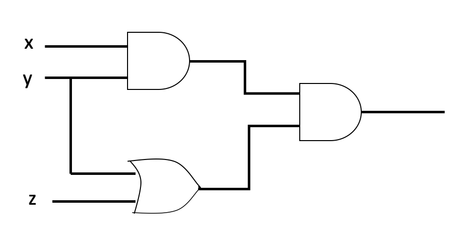

Chapter 4 Boolean Algebra
- George Boole approached logic in a new way reducing it to a simple algebra.
- He introduced symbolic logic known as Boolean Algebra, Boolean function, Boolean expression, Boolean ring etc.
- Each variable in Boolean Algebra has either of two values: true or false.
- The purpose of Boolean Algebra is to solve logic problems.
- C.E Shannon observed that Boolean Algebra could be used to analyze electronic circuits.
4.1 Gates
- In Chapter 3 we discussed about logic connectives \(\lnot\), \(\land\) and \(\lor\).
- The connectives \(\land\) and \(\lor\) can be considered as circuits connected in series and parallel, respectively.
- A circuit with one or more input signals but only one output signal is known as a gate.
- Gates are digital circuits because of input and output signals, which are either low or high.
- Gates are also known as logical circuits as they can be analyzed with Boolean Algebra.
- In gates, the connectives \(\lnot\), \(\land\) and \(\lor\) are usually denoted by the symbols \(^\prime, \;\;.\) and \(+\), respectively.
4.1.1 NOT gate
A NOT gate receives input \(x\), where \(x\) is a bit (binary digit) and produces output \(x^\prime\) where
\[\begin{equation} x^\prime = \begin{cases} 1 & \text{if } x=0\\ 0 & \text{if } x=1 \end{cases} \end{equation}\]
- \(x^\prime\) is called the complement of \(x\).
- 0 is called the zero element.
- 1 is called the unit element.
- The output state is always the opposite of the input state.
- The output is also known as the complement of the input.
- The block diagram and the logic table for the basic NOT gate:

4.1.2 AND gate
- An AND gate receives input \(x_1\) and \(x_2\), where \(x_1\) and \(x_2\) are bits, and produces output \((x_1 \land x_2)\) where
\[\begin{equation} (x_1 \land x_2) = \begin{cases} 1 & \text{if } x_1=x_2=1\\ 0 & \text{ Otherwise } \end{cases} \end{equation}\]
- \((x_1 \land x_2)\) is called the meet of \(x_1\) and \(x_2\).
- An AND gate can have more than two inputs, but only one output.
- The block diagram and the logic table for the basic AND gate:

4.1.3 OR gate
- An OR gate receives input \(x_1\) and \(x_2\), where \(x_1\) and \(x_2\) are bits, and produces output \((x_1 \lor x_2)\) where
\[\begin{equation} (x_1 \lor x_2) = \begin{cases} 1 & \text{if } x_1 \text{ or } x_2=1\\ 0 & \text{ Otherwise } \end{cases} \end{equation}\]
- \((x_1 \lor x_2)\) is called the join of \(x_1\) and \(x_2\).
- An OR gate can have more than two inputs, but only one output.
- The block diagram and the logic table for the basic OR gate:

4.1.4 More logic gates
- There are some other types of gates that are widely used in Computer Science such as NAND, NOR, XOR, and XNOR gates
4.1.4.1 NOR gate
- A NOR gate receives input \(x_1\) and \(x_2\), where \(x_1\) and \(x_2\) are bits, and produces output \((x_1 \lor x_2)^\prime\) where
\[\begin{equation} (x_1 \lor x_2)^\prime = \begin{cases} 1 & \text{if } x_1 = x_2=0\\ 0 & \text{ Otherwise } \end{cases} \end{equation}\]
- A NOR gate can have more than two inputs, but only one output.
- The block diagram and the logic table for the basic NOR gate:

4.1.4.2 NAND gate
- A NAND gate receives input \(x_1\) and \(x_2\), where \(x_1\) and \(x_2\) are bits, and produces output \((x_1 \land x_2)^\prime\) where
\[\begin{equation} (x_1 \land x_2)^\prime = \begin{cases} 1 & \text{if } x_1 =0 \text{ or } x_2=0\\ 0 & \text{ Otherwise } \end{cases} \end{equation}\]
- A NAND gate can have more than two inputs, but only one output.
- The block diagram and the logic table for the basic NAND gate:

4.1.4.3 XOR gate (Exclusive OR gate)
- A XOR gate receives input \(x_1\) and \(x_2\), where \(x_1\) and \(x_2\) are bits, and produces output \((x_1 \overline{\lor} x_2)\) or \((x_1 \oplus x_2)\), where
\[\begin{equation} (x_1 \oplus x_2)^\prime = \begin{cases} 1 & \text{if } x_1 =1 \text{ or } x_2=1 \text{ but not both}\\ 0 & \text{ Otherwise } \end{cases} \end{equation}\]
- Rule: XOR gate produces 1 that have an odd number of 1’s.
- A XOR gate can have more than two inputs, but only one output.
- The block diagram and the logic table for the basic XOR gate:

4.1.4.4 XNOR gate (Exclusive NOR gate)
- A XNOR gate receives input \(x_1\) and \(x_2\), where \(x_1\) and \(x_2\) are bits, and produces output \((x_1\text{ XNOR }x_2)\), where
\[\begin{equation} (x_1 \text{ XNOR } x_2)^\prime = \begin{cases} 1 & \text{if } x_1 \text{ and } x_2 \text{ are same bits}\\ 0 & \text{ Otherwise } \end{cases} \end{equation}\]
- A XNOR gate can have more than two inputs, but only one output.
- It can recognize even-parity words i.e a word which has an even number of 1’s.
- Example: 11001111 is even-parity as it contains six 1’s, 1110 is an odd-parity as it has an odd number of 1’s.
- The block diagram and the logic table for the basic XNOR gate:
4.2 Combinatorial Circuit
- A combinatorial circuit produces a unique output for every combination of inputs.
- A combinatorial circuit has no memory, previous inputs and the state of the system do not affect the output of a combinatorial circuit.
- These circuits can be constructed using gates which we have already discussed.

4.3 Boolean Expression
- Any expression built up from the variables \(x_1,y_1,z_1, x_2,y_2,z_2,\dots\) by applying the operations \(\land, \; \lor\) and \(^\prime\) a finite number of times is called a Boolean expression.
- If \(X\) and \(Y\) are two Boolean expressions, then \(X^\prime, \;Y^\prime, \; (X\land Y)\) and \((X\lor Y)\) are also Boolean expressions.
- The output of a combinatorial circuit is also a Boolean expression.
Example

4.3.1 Theorem
- If \(\land, \; \lor\) and \(^\prime\) are connectives introduced earlier, then the following properties hold.
Associative Law: For all \(a,b,c \in \{0,1\}\) \[(a \land b) \land c = a \land (b\land c) \text{ and } (a \lor b) \lor c = a \lor (b\lor c)\]
Identity Law: For all \(a \in \{0,1\}\) \[(a \land 1) = a \text{ and } (a \lor 0) = a\]
Commutative Law: For all \(a,b\in \{0,1\}\) \[(a \land b) = (b \land a) \text{ and } (a \lor b) = (b \lor a)\]
Complement Law: For all \(a\in \{0,1\}\) \[(a \land a^\prime) = 0 \text{ and } (a \lor a^\prime) = 1\]
Distributive Law: For all \(a,b,c\in \{0,1\}\) \[a \lor (b\land c) = (a \lor b) \land (a \lor c) \text{ and } a \land (b\lor c)= (a \land b) \lor (a \land c)\]
De-Morgan’s Law: If \(x_1\) and \(x_2\) are bits, i.e. \(x_1, x_2\in \{0,1\},\) then \[(x_1 \land x_2)^\prime = x_1^\prime \lor x_2^\prime \text{ and } (x_1 \lor x_2)^\prime = x_1^\prime \land x_2^\prime \]

4.4 Equivalent Combinatorial Circuits
- Two combinatorial circuits, each having inputs \(x_1, x_2, \dots, x_n\) are said to be equivalent if they produce the same output for same inputs.

4.5 Boolean Algebra
A Boolean algebra consists of a set \(S\) together with two binary operations \(\land\) and \(\lor\) on \(S\), a singular operation \(^\prime\) on \(S\) and two specific elements 0 and 1 of \(S\) such that the following laws hold.
- A Boolean algebra will be designated by a hextuple \(B = \langle S, \land, \lor, ^\prime, 0,1\rangle\)
Sometimes one refers to the set \(S\) as a Boolean algebra, but this is just a loose misuse of language.
Associative Law: For all \(a,b,c \in S\) \[(a \land b) \land c = a \land (b\land c) \text{ and } (a \lor b) \lor c = a \lor (b\lor c)\]
Identity Law: For all \(a \in S\) \[(a \land 1) = a \text{ and } (a \lor 0) = a\]
Commutative Law: For all \(a,b\in S\) \[(a \land b) = (b \land a) \text{ and } (a \lor b) = (b \lor a)\]
Complement Law: For all \(a\in S\) \[(a \land a^\prime) = 0 \text{ and } (a \lor a^\prime) = 1\]
Distributive Law: For all \(a,b,c\in S\) \[a \lor (b\land c) = (a \lor b) \land (a \lor c) \text{ and } a \land (b\lor c)= (a \land b) \lor (a \land c)\]
4.5.1 Theorem
In a Boolean algebra: if \((a\lor b) =1\) and \((a\land b) =0,\) then \(b=a^\prime,\) i.e. the complement is unique
4.5.2 Theorem
In a Boolean algebra \(B = \langle S, \land, \lor, ^\prime, 0,1\rangle\); the following properties hold.
- Idempotent Law: For all \(x \in S\) \[(x \lor x) =x \text{ and } (x \land x) =x\]
- Bound Law: For all \(x \in S\) \[(x \lor 1) =1 \text{ and } (x \land 0) =0\]
- Absorption Law: For all \(x,y \in S\) \[x \land (x\lor y) =x \text{ and } x \lor (x \land y) =x \]
- Involution Law: For all \(x \in S\) \[(x^\prime)^\prime =x \]
- 0 and 1 Law: \(0^\prime =1\) and \(1^\prime =0\)
- De-Morgan’s Law: For all \(x, y \in S\) \[(x \land y)^\prime = x^\prime \lor y^\prime \text{ and } (x \lor y)^\prime = x^\prime \land y^\prime \]
4.6 Dual of a Statement
- The dual of a statement involving Boolean expressions is obtained by replacing 0 by 1, 1 by 0, \(\land\) by \(\lor\), and \(\lor\) by \(\land\).
- Two Boolean expressions are said to be dual of each other if one expression is obtained from other by replacing 0 by 1, 1 by 0, \(\land\) by \(\lor\), and \(\lor\) by \(\land\).
- In Boolean Algebra, the dual of a theorem is also a theorem.
Example
What the dual of the statement: \((x \land y)^\prime = x^\prime \lor y^\prime\)

4.7 Boolean Function
Let \(B = \langle S, \land, \lor, ^\prime, 0,1\rangle\) be a Boolean algebra and let \(X(x_1, x_2,x_3, \dots, x_n)\) be a Boolean expression in \(n\) variables.
A function \(f: B^n \rightarrow B\) is called a Boolean function if \(f\) is of the form
\(f(x_1, x_2,x_3, \dots, x_n) = X(x_1, x_2,x_3, \dots, x_n)\)
Example
Consider the Boolean function \(f: B^3 \rightarrow B; \;\; B = \{0,1\}\) defined by \[f(x_!,x_2,x_3) = x_1 \land (x_2 \lor \bar{x_3})\]

4.7.1 Representation of Boolean Functions
There are several ways of representing Boolean functions.
- Tabular representation
- \(n\) Space representation
- Cube representation
Tabular representation
- A Boolean function is completely determined by its evaluation over any Boolean algebra.
- In tabular representation, we consider a row \(R\) of the table where the output is 1.
- We then form the combination \((x_1 \land x_2 \land x_3 \land \dots \land x_n)\) and place a bar over each \(x_i\) whose value is 0 in row \(R\).
- The combination formed is 1 if and only if \(x_i\) have the value given in row \(R\).
- We thus join (OR) the terms to obtain the Boolean expression.
Example
| \(x_1\) | \(x_2\) | \(x_3\) | \(f(x_1, x_2, x_3)\) |
|---|---|---|---|
| 1 | 1 | 1 | 1 |
| 1 | 1 | 0 | 0 |
| 1 | 0 | 1 | 1 |
| 0 | 1 | 1 | 0 |
| 1 | 0 | 0 | 0 |
| 0 | 1 | 0 | 1 |
| 0 | 0 | 1 | 0 |
| 0 | 0 | 0 | 0 |

4.8 Various Normal Forms
4.8.1 Disjunctive normal form
- A Boolean function \(f: B^n \rightarrow B\) which consists of a sum of elementary products is called the disjunctive normal form of the given function \(f\)
- Let \(f: B^n \rightarrow B\) is a Boolean function.
- If \(f\) is not identically zero, let \(A_1, A_2, A_3, \dots, A_k\) denote the elements \(A_i\) of \(B_2^n,\) for which \(f(A_i) =1,\) where
\[A_i = (a_1, a_2,\dots, a_n).\]
- For each \(A_i\) set \(m_i = (y_1 \land y_2 \land y_3\land \dots \land y_n)\), where
\[\begin{equation} y_i = \begin{cases} x_i & \text{if } a_i=1\\ x_i^\prime & \text{if } a_i=0. \end{cases} \end{equation}\]
- Then \(f(x_1, x_2, x_3, \dots, x_n)= m_1 \lor m_2 \lor m_3 \lor \dots \lor m_k.\)
- This representation of a Boolean function is called the disjunctive normal form
Example
Consider the Boolean function \((x_1 \oplus x_2).\) The truth table for this function is given below.
| \(x_1\) | \(x_2\) | \((x_1 \oplus x_2)\) |
|---|---|---|
| 1 | 1 | 0 |
| 1 | 0 | 1 |
| 0 | 1 | 1 |
| 0 | 0 | 0 |
Write the disjunctive form of this function

4.8.2 Conjunctive normal form
- A Boolean function \(f: B^n \rightarrow B\) which consists of a product of elementary sums is called the conjunctive normal form of the given function \(f\)
- Let \(f: B^n \rightarrow B\) is a Boolean function.
- If \(f\) is not identically one, let \(A_1, A_2, A_3, \dots, A_k\) denote the elements \(A_i\) of \(B_2^n,\) for which \(f(A_i) =0,\) where
\[A_i = (a_1, a_2,\dots, a_n).\]
- For each \(A_i\) set \(M_i = (y_1 \lor y_2 \lor y_3\lor \dots \lor y_n)\), where
\[\begin{equation} y_i = \begin{cases} x_i & \text{if } a_i=0\\ x_i^\prime & \text{if } a_i=1. \end{cases} \end{equation}\]
- Then \(f(x_1, x_2, x_3, \dots, x_n)= M_1 \land M_2 \land M_3 \land \dots \land M_k.\)
- This representation of a Boolean function is called the conjunctive normal form
Example
Consider the Boolean function \((x_1 \oplus x_2).\) The truth table for this function is given below.
| \(x_1\) | \(x_2\) | \((x_1 \oplus x_2)\) |
|---|---|---|
| 1 | 1 | 0 |
| 1 | 0 | 1 |
| 0 | 1 | 1 |
| 0 | 0 | 0 |
Write the conjunctive form of this function
- A term of the form \((y_1\land y_2 \land y3 \land \dots \land y_n),\) where each \(y_i\) is either \(x_i\) or \(\bar{x_i}\) is called a minterm.
- A term of the form \((y_1 \lor y_2 \lor y3 \lor \dots \lor y_n),\) where each \(y_i\) is either \(x_i\) or \(\bar{x_i}\) is called a maxterm
References
Acharjya, D. P. (2009). Fundamental approach to discrete mathematics. New Age International.
Mendelson, E. (1970). Boolean algebra and switching circuits. McGraw-Hill Edition 2004.
Tutorial
- Construct an AND gate using three NOR gates
- Construct an OR gate using three NAND gates
- Draw a gating network to the statement \((x.y)+(y.z)+(z.x)\)
- Draw a gating network to the statement \((x+y)^\prime(z.u)+(x.y)^\prime(z+u)\)
- What is the output of the following gating network

- Construct a gating network using inverter and OR gate to the statement \((x.y)+(y.z)+(z.x)\)
- Find the value of the Boolean expression given below for \(x=1,\) \(y=1\) and \(z=0.\) \[(x\land(y\lor(x\land y^\prime)))\lor((x\land y^\prime)\lor (x\land z^\prime)^\prime)\]
- Construct an AND gate using inverters and three NOR gates.
- Write the Boolean expression that represents the following combinatorial circuit, construct the logic table with the output of each gate.

- Show that \(y=z\) when \((x+y)=(x+z)\) and \((x^\prime+y)=(x^\prime+z)\).
- Given the Boolean function \(f\), write \(f\) in its disjunctive normal form.
| \(x\) | \(y\) | \(z\) | \(f(x,y,z)\) |
|---|---|---|---|
| 1 | 1 | 1 | 1 |
| 1 | 1 | 0 | 1 |
| 1 | 0 | 1 | 0 |
| 1 | 0 | 0 | 0 |
| 0 | 1 | 1 | 0 |
| 0 | 1 | 0 | 1 |
| 0 | 0 | 1 | 0 |
| 0 | 0 | 0 | 1 |
- Draw the logic circuit (Combinatorial circuit) with input \(x,y,z\) and output \(Y\) to the following Boolean expressions.
- \(Y = x^\prime yz+x^\prime yz^\prime +xyz^\prime\)
- \(Y = x y^\prime z+xz^\prime +y^\prime z\)
- Show that the combinatorial circuits (a) and (b) are equivalent.
Figure 4.1: (a)
Figure 4.2: (b)
- Reduce the following Boolean products to either 0 or a fundamental product
- \(x.y.x^\prime.z\)
- \(x.y.z^\prime.y.x\)
- Given the Boolean function \(f\), write \(f\) in its conjunctive normal form.
| \(x\) | \(y\) | \(z\) | \(f(x,y,z)\) |
|---|---|---|---|
| 1 | 1 | 1 | 1 |
| 1 | 1 | 0 | 1 |
| 1 | 0 | 1 | 0 |
| 1 | 0 | 0 | 0 |
| 0 | 1 | 1 | 0 |
| 0 | 1 | 0 | 1 |
| 0 | 0 | 1 | 0 |
| 0 | 0 | 0 | 1 |
- Design a combinatorial circuit that computes exclusive OR (XOR) of \(x\) and \(y\).
- Given the Boolean function \(f\), write \(f\) in its
- disjunctive normal form
- conjunctive normal form
- draw the combinatorial circuit to the disjunctive normal form.
| \(x\) | \(y\) | \(z\) | \(f(x,y,z)\) |
|---|---|---|---|
| 1 | 1 | 1 | 0 |
| 1 | 1 | 0 | 0 |
| 1 | 0 | 1 | 0 |
| 1 | 0 | 0 | 1 |
| 0 | 1 | 1 | 1 |
| 0 | 1 | 0 | 1 |
| 0 | 0 | 1 | 1 |
| 0 | 0 | 0 | 0 |
- Find the disjunctive normal form of the function, \(f(x,y)= (x+y).(x^\prime+y^\prime)\) using algebraic technique
- Find the disjunctive normal form for the following combinatorial circuit.

- Uniqueness of the complement: Show that \(y=x^\prime\), when \(x \lor y=1\) and \(x\land y = 0\)